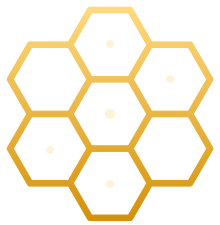

Minds thinking together.
A confab of minds — multiple AI agents that confer, collaborate, and solve problems as one. Model-agnostic. Bring your own keys. Open source.
Synnoesis orchestrates independent AI agents that talk to each other — debating, dividing work, and converging on answers no single model reaches alone.
Agents confer and collaborate — proposing, challenging, and refining — so the collective solves what a lone model can't.
Model-agnostic by design. Tested with Claude, OpenRouter, and Grok — your credentials, your control. No lock-in.
Swap providers freely. If one model goes dark, route to another — no rewrite, no vendor lock-in.
There's no central architect. Each agent is a bee; the solution is the comb — a structure that emerges from many minds working in concert.
Add an agent and the hive grows. Remove one and it adapts. The intelligence isn't in any single cell — it's in the collaboration between them.
That's Synnoesis: emergent intelligence from collective work.